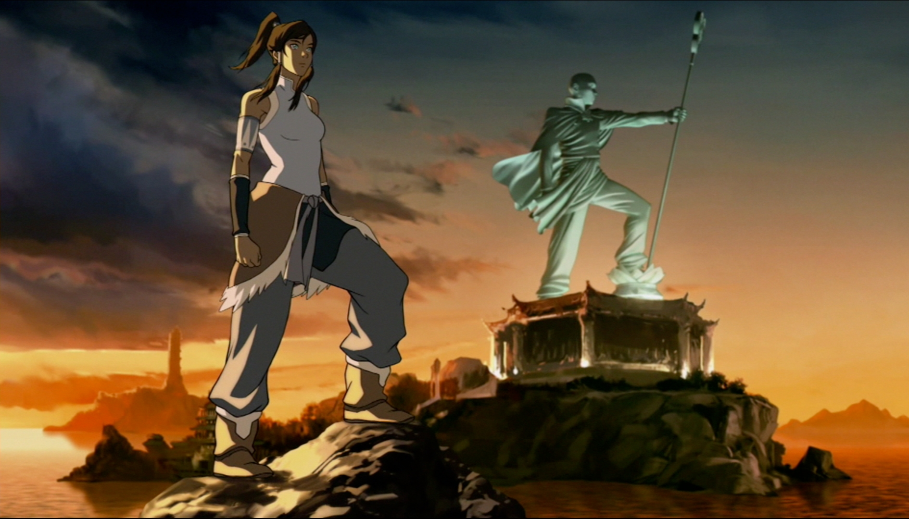

About Korra
Korra is the most kick ass Avatar yet, she's from the Southern Water Tribe and you don't want to pick a fight with her unless you planned on losing.
Korra next to Avatar Aang
Korra's Characteristics
- She has a polar bear dog named Naga
- She was bending 3 elements at age 4
- She's the first avatar to Metal bend
Korra's Friends
Korra has many amazing friends. Her best friend is Naga, a polar bear dog. Click on the links below to read more about them: